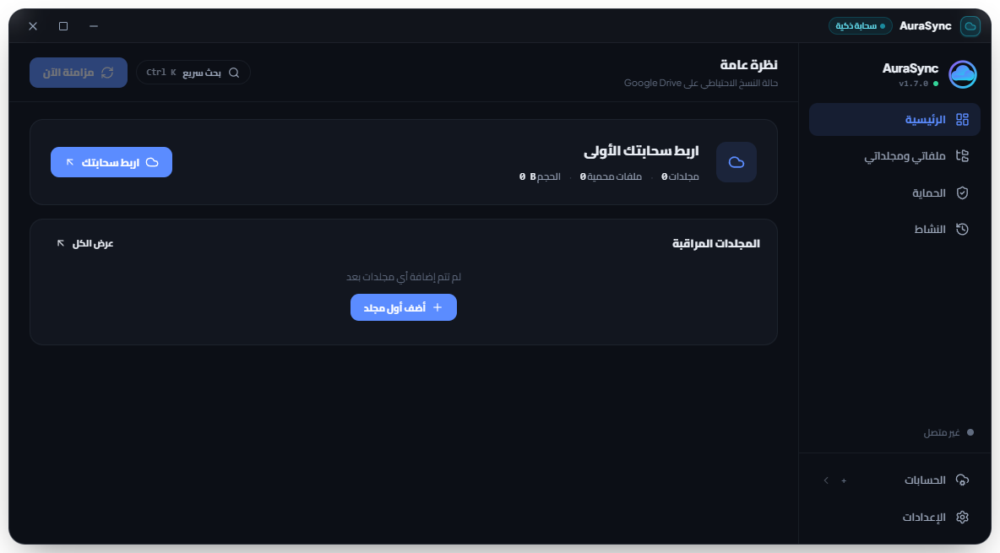
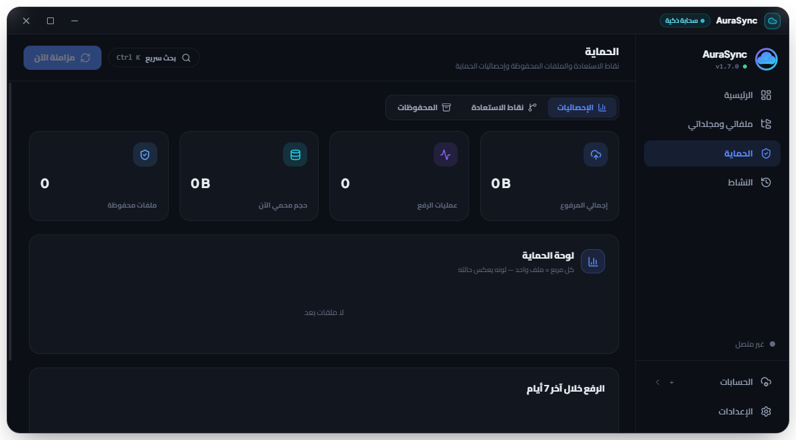

AuraSync — مشروع سحابه
المنصة الهندسية الذكية للنسخ الاحتياطي متعدد السحابات وحماية البيانات بسياسة انعدام الحذف
منظومة إنتاجية متكاملة تجمع بين سياسة انعدام الحذف الحصرية، ودمج أكثر من 25 سحابة، وحارس المتصفحات المبتكر Win+L، وتطبيق أندرويد مستقل لنقل المعرض بنقرة واحدة.
Desktop v1.7.97 (Electron + SQLite WASM) | Mobile v1.0.7 (Android APK Native)
Commercial Grade Architecture • Principal Software Architect Standard
معضلة فقدان البيانات ومخاطر السحابة التقليدية
تحليل الثغرات الكارثية في خدمات التخزين السحابي الحالية وسلوك المستخدمين
⚠️ كارثة الحذف المتزامن التبادلي
- في Google Drive و OneDrive و Dropbox، إذا حذفت ملفاً من حاسوبك بالخطأ، تحذفه السحابة فوراً من كافة الأجهزة!
- برمجيات الفدية (Ransomware): بمجرد تشفير الملفات محلياً، تقوم المزامنة العادية باستبدال النسخ السليمة في السحابة فوراً.
- انعدام الحماية التلقائية للبيانات المحذوفة محلياً دون اشتراكات مؤسسية باهظة.
🔒 تشتت التخزين واحتكار الشركات (Vendor Lock-in)
- يمتلك المستخدم 15GB في جوجل، 5GB في ون درايف، و 20GB في ميجا دون أي رابط موحد بينها.
- الشركات تجبر المستخدم على شراء اشتراكات شهرية متكررة عند امتلاء حساب واحد.
- استحالة نقل الملفات مباشرة من سحابة إلى سحابة أخرى دون تنزيلها أولاً على القرص الصلب.
📱 أزمة ذاكرة الهواتف الذكية والمعرض
- امتلاء ذاكرة الهاتف بآلاف الصور والفيديوهات دون أداة بنقرة واحدة لنقل المعرض بالكامل لسحابة خاصة.
- قيود رفع المعرض: أغلب التطبيقات تنهار عند محاولة مشاركة أكثر من 50-100 صورة معاً.
- الاستنزاف السريع لبطارية الهاتف وباقة البيانات الخلوية أثناء المزامنة العشوائية.
👁️ مخاطر الخصوصية وتطفل الأجهزة المفتوحة
- ترك أجهزة الكمبيوتر أو الهواتف في المكاتب والمنازل يُعرّض الحسابات والواتساب والبريد للتطفل.
- المتصفحات الحديثة تحفظ الجلسات مفتوحة دون أي طلب لرمز PIN أو بصمة عند التبديل للنوافذ.
- غياب التشفير الحقيقي للمجلدات الحساسة قبل رفعها إلى الخوادم السحابية الخارجية.
الحل الثوري: منصة AuraSync الهجينة الذكية
منظومة متكاملة لحفظ الملفات وتوحيد السحابات وتأمين النظام على مستوى النواة
🛡️ 1. سياسة انعدام الحذف نهائياً (Zero-Deletion Policy)
الملف المحذوف محلياً يظل محفوظاً في السحابة بأمان 100% مع شارة تنبيه برتقالية وإمكانية استرجاعه بنقرة زر.
☁️ 2. مُجمّع السحابات الشامل (Universal Cloud Aggregator)
ربط وإدارة +25 سحابة وبروتوكول قياسي مع محرك نقل مباشر بين السحابات دون استهلاك مساحة القرص.
🔐 3. حارس المتصفحات المبتكر والأمان السيبراني (Browser Guard & Vault)
قفل فوري للمتصفحات (Chrome, Edge, Brave...) برمز PIN مع حماية قفل الجهاز بالكامل Win+L بعد خطأين.
⚡ 4. سرعة الفايبر واستعادة الكوارث (Turbo Concurrency & Recovery)
محرك توازي يصل إلى 32 عاملاً لاستغلال خطوط الفايبر، واستعادة الحاسوب بالكامل بعد الفورمات بضغطة زر.
الجوهرة الهندسية: سياسة انعدام الحذف (Zero-Deletion)
كيف تضمن AuraSync بقاء ملفاتك محمية للأبد حتى لو تم مسحها محلياً؟
الحذف المشترك المتعمد (Dual Joint Delete)
إذا رغب المستخدم في مسح ملف بشكل نهائي من الحاسوب والسحابة معاً، يتوفر خيار حصري عبر قائمة كليك يمين أو الواجهة.
- تأكيد أمان ذكي يمنع الحذف غير المقصود.
- تنفيذ الحذف بالتوازي على الطرفين في أجزاء من الثانية.
- حصانة كاملة ضد هجمات الفدية والأخطاء البشرية.
سحابة واحدة تجمع كل السحابات: دعم +25 منصة وبروتوكول
توحيد حساباتك السحابية المشتتة تحت مظلة أمنية واحدة مع ميزة النقل السحابي المباشر
🌐 السحابات الكبرى
- Google Drive (كاش لمنع حظر 429)
- Microsoft OneDrive (Personal & Business)
- Dropbox (تكامل مباشر عبر API v2)
- Box & pCloud (مزامنة سريعة)
🔒 السحابات المشفرة والخاصة
- Mega.nz (تشفير طرف لطرف وتجاوز القيود)
- Telegram Cloud (تخزين غير محدود عبر البوت)
- Yandex Disk & Koofr
- تشفير إضافي محلي قبل وصول الملف للسيرفر
🗄️ البروتوكولات المفتوحة وسحابات S3
- WebDAV: Nextcloud, Synology, QNAP
- S3 Compatible: Amazon AWS S3, Cloudflare R2
- MinIO (للخوادم المنزلية والشركات)
- Wasabi & Backblaze B2 (أقل تكلفة)
⚡ أداة النقل السحابي المباشر المدمجة (Cross-Cloud Direct Transfer Engine)
نقل عشرات الجيجابايت من سحابة إلى سحابة أخرى (مثلاً من Google Drive إلى OneDrive أو Mega) مباشرة في الذاكرة دون حفظ الملفات على القرص الصلب (Zero Local Disk Footprint)، مما يحافظ على عمر القرص SSD وسرعة جهازك.
معمارية برمجية مزدوجة ومستقلة: الحاسوب والهاتف
هندسة برمجية بمعايير 25 عاماً: مساران مستقلان بالكامل في التطوير والبناء والإصدار

💻 المسار الأول: نسخة الحاسوب المستقلة (Desktop Engine)
- البيئة واللغات: Electron + Node.js 20+ مع واجهة React 18 و Vite فائقة السرعة.
- قاعدة بيانات محلية فائقة القوة: SQLite WASM مع معاملات الدفعات المجمعة.
- تكامل نظام ويندوز: استدعاءات Win32 API وقشرة ويندوز عبر user32.dll وقوائم شل.
- استهلاك موارد متناهي الصغر: أقل من 65MB رام في الخمول، واستهلاك معالج < 1%.
📱 المسار الثاني: نسخة الهاتف المستقلة (Android Native APK)
- تطبيق أندرويد حقيقي: مبني بلغة Java الأصلية (MainActivity.java) مع جسر أصول مباشر.
- أمان بيومتري حقيقي: دمج مستشعر البصمة الرسمي للنظام (BiometricPrompt).
- مستقبل المشاركة الجماعي: استقبال 900+ صورة دفعة واحدة عبر Android Share Intent دون أي انهيار.
- حزم APK موقعة ومحدثة لأحدث أنظمة Android 14 و Android 15 (Target SDK 34).
الغوص الهندسي في محرك الحاسوب (Desktop Engine)
حلول هندسية عميقة لمعالجة أقفال الملفات، وتسريع قواعد البيانات، واستقرار الذاكرة
⚡ المعالجة المجمعة وقواعد البيانات (Batch SQLite)
- استبدال آلاف استعلامات القرص الفردية بمعاملات مجمعة عبر upsertFilesBatch.
- تقليص زمن فحص ومزامنة 40,000 ملف من 3 دقائق كاملة إلى أقل من 4 ثوانٍ فقط!
- فهارس B-Tree محسنة لمسارات الملفات ومعرفات المجلدات لزمن استعلام O(log N).
- كتابة وحفظ لاتزامني غير حاجب لواجهة المستخدم (Non-blocking async disk flushing).
🧠 كاش المجلدات الذكي (Parent Folder Caching)
- معضلة Google Drive: تكرار طلبات البحث عن المجلدات يؤدي لحظر الحساب برمز 429.
- ابتكار الكاش الداخلي: تخزين شجرة المجلدات بالذاكرة (parentFolderFilesCache).
- إلغاء آلاف طلبات files.list المكررة وضمان تدفق الرفع بسرعة خط الإنترنت القصوى.
- إنشاء تلقائي للمجلدات الفارغة والحفاظ على هيكل المجلدات مطابقاً للأصل 1:1.
🔧 تجاوز أقفال ملفات ويندوز (EBUSY / EPERM)
- المعضلة: برامج مكافحة الفيروسات وويندوز تقفل الملفات التنفيذية أثناء التحديثات.
- الحل المعماري: نظام التفويض لقشرة ويندوز مع إعادة المحاولة المتكررة (Exponential Retry).
- تحديث ذكي بالدلتا: نسخ الملفات المتغيرة فقط app.asar وتخطي ملفات Chromium.
- إنهاء التحديث وإعادة تشغيل التطبيق في أقل من 800 ميلي ثانية بصمت تام.
🧹 فلترة المخلفات ونقاء السحابة (Zero Junk Guarantee)
- حجب دائم ونهائي لملفات النظام المخفية: desktop.ini, Thumbs.db, .DS_Store.
- تطهير فوري لقاعدة البيانات عند الإقلاع لمحو أي سجلات سابقة للملفات المخفية.
- المحو السحابي الصاعق (1-Second Cloud Wipe): مسح السحابة بالكامل عبر شلال الخوادم.
- تفريغ سلة المهملات تلقائياً لضمان عودة كوتا التخزين إلى 0GB بدقة.
هندسة نسخة الهاتف: نقل كامل المعرض بضغطة زر
حل مشكلة امتلاء ذاكرة الهاتف وتقديم تجربة مستخدم سريعة، مشفرة ومستقلة
📁 مجلد الهاتف المخصص (aurasync-mobile)
- عزل كامل لملفات الهاتف: إنشاء مجلد aurasync-mobile تلقائياً على كل السحابات.
- عدم خلط صور الهاتف بملفات الكمبيوتر أو مجلدات العمل لضمان الترتيب التام.
- التحقق الحقيقي من السحابة: فحص وجود المجلد السحابي والملفات قبل أي تنزيل.
- ميزة إخلاء مساحة الهاتف الآمنة بعد التأكد التام من اكتمال الرفع السحابي.
📤 مشاركة 900+ ملف دفعة واحدة (Bulk Share Intent)
- استقبال المشاركات الضخمة عبر MainActivity.java بنظام ACTION_SEND_MULTIPLE.
- تحديد مئات الصور والفيديوهات من المعرض ومشاركتها مباشرة مع AuraSync.
- محرك الرفع المتوازي مع شريط تقدم حي ومؤشر {done} / {total} دقيق بالثانية.
- استئناف تلقائي لعمليات الرفع عند انقطاع الإنترنت دون إعادة الملفات من البداية.
👆 الأمان البيومتري ولوحة PIN التفاعلية
- مستشعر البصمة الحقيقي: استدعاء واجهة BiometricPrompt الرسمية لنظام أندرويد.
- لوحة أرقام PIN زجاجية (12-Key Glassmorphism) مع ردود فعل حركية عند الخطأ.
- جسر أمان لاتزامني: لا يتم فتح القفل إلا بعد صدور إشارة المصادقة الحقيقية.
- حماية الخزنة السحابية من أي متطفل حتى لو كان الهاتف مفتوحاً.
🔋 حارس البطارية وشبكة الواي فاي (Smart Sentinel)
- المزامنة المشروطة: إمكانية تفعيل النسخ التلقائي عند الاتصال بشبكة Wi-Fi فقط.
- المزامنة أثناء الشحن فقط: للحفاظ على عمر البطارية ومنع استنزافها أثناء التنقل.
- فحص البصمة الرقمية (Hash Deduplication): منع إعادة رفع الصور المكررة نهائياً.
- توافق كامل مع Android 14 و Android 15 بحزم APK موقعة وخالية من المشاكل.
الأمن السيبراني: تشفير الحاويات وحارس المتصفحات
ابتكار غير مسبوق يدمج بين التشفير العسكري وقفل تصفح الإنترنت الفوري لحماية الخصوصية

🛡️ حارس المتصفحات وقفل نظام ويندوز (Win + L)
- قفل فوري (0ms) بمجرد التبديل للمتصفح مع ظهور بطاقة زجاجية فاخرة لإدخال رمز PIN.
- حماية نظام ويندوز الصارمة: بعد محاولتين خاطئتين للرمز، يتم قفل الكمبيوتر بالكامل فوراً (Win + L).
- خزنة التشفير العسكري AES-256-GCM مع اشتقاق PBKDF2 والجلسة المعزولة الآمنة.
استعادة الجهاز وهجرة الحواسيب بنقرة واحدة (1-Click Recovery)
إعادة بناء جهازك بالكامل بعد الفورمات أو الانتقال لحاسوب جديد بنفس الترتيب والمجلدات
💾 معمارية بصمة الجهاز (aurasync-machine-manifest.json)
- حفظ خريطة المجلدات السحابية: يتم تسجيل مسارات الحاسوب الأصلية في ملف مانيفست سحابي ذكي.
- التعرف التلقائي على مسارات ويندوز القياسية وإعادة ربطها فورياً على الجهاز الجديد:
- Desktop ➔ سطح المكتب الجديد | Documents ➔ المستندات | Pictures ➔ الصور.
- التعامل الذكي مع مسارات ون درايف الافتراضية وإعادة توجيهها دون حدوث تكرار.
⚡ محرك التنزيل المتزامن فائق السرعة (Parallel Restore)
- حوض عمال متوازيين (Download Worker Pool) لتنزيل عشرات الملفات بالتزامن.
- مؤشرات سرعة وإنجاز حية: عداد رقمي دقيق للسرعة بالثانية ونسبة مئوية للإتمام.
- التخطي الذكي للملفات المتطابقة: عدم إهدار الإنترنت في تنزيل ملفات موجودة بالفعل.
- إعادة تفعيل المراقبة وتلوين المجلدات تلقائياً بمجرد اكتمال الاستعادة.
محرك السرعة الفائقة واستغلال شبكات الفايبر (Turbo Concurrency)
أقصى استغلال لسرعة الإنترنت وسحق زمن الانتظار عبر المعالجة المتزامنة المتعددة
🎛️ أنماط السرعة الأربعة (Speed & Concurrency Profiles)
- نمط الهدوء (Quiet — 2 Workers): استهلاك صفري، مثالي للألعاب والمكالمات.
- النمط المتوازن الموصى به (Balanced — 4 Workers): أفضل توازن للأداء.
- نمط التوربو (Turbo — 8 to 16 Workers): مضاعفة السرعة لشبكات الألياف.
- ألترا توربو لسرعات الفايبر (Ultra Turbo — 24 to 32 Workers): استغلال خطوط 1000 Mbps.
🌐 تخطي زمن استجابة السحابة (Overcoming HTTP Latency)
- المعضلة: استجابة خوادم جوجل ومايكروسوفت تستغرق 200-400ms لكل ملف فردي.
- الحل: الرفع المتوازي لـ 32 ملفاً في نفس اللحظة يجعل سرعة الرفع مشبعة لخط الإنترنت.
- رفع آلاف الصور والمستندات في دقائق معدودة بدلاً من الانتظار لساعات طويلة.
- إعادة المحاولة الذكية المتدرجة (Exponential Backoff) عند أي تقلب بالشبكة.
فلسفة التصميم: نظام Calm وثلاثة ثيمات فاخرة
تصميم عصري فائق النقاء يدمج بين الفخامة والراحة البصرية وسلاسة التصفح 60FPS

🎨 نظام التصميم الهادئ (The Calm Visual Design System)
- انحناءات ناعمة مدروسة بدقة 20px تعطي شعوراً بالحداثة والاستقرار.
- توهج محيطي خافت (Subtle Ambient Glow) يبرز العناصر المهمة دون إجهاد العين.
- أزرار تفاعلية لمسية مع استجابة ميكروية سلسة عند النقر والتحويم.
- كبسولات إحصائية مضغوطة توفر نظرة سريعة على حالة المزامنة والسعة.
✨ الثيمات الثلاثة الفاخرة وسلاسة العرض (60 FPS)
- الأسود الفاحم النقي (Pure Pitch Black): خلفيات #000000 مع أزرق ملكي كلاسيكي وتصميم إنساني أصيل.
- الأزرق الكحلي الملكي (Midnight Sapphire): زرقة عميقة غنية ومبهرة لبيئات العمل.
- الأبيض اللؤلؤي العصري (Pristine White): نقاء ووضوح استثنائي للمكاتب المضيئة.
- تصفح افتراضي خفيف (Windowed Browsing): سلاسة مطلقة عند استعراض آلاف الملفات.
دراسة الجدوى وتوفير التكاليف (Enterprise ROI & Cloud Savings)
كيف يوفر AuraSync آلاف الدولارات سنوياً للمستخدمين والشركات مع حماية أصول البيانات
💰 توحيد السعات المجانية وتفادي الاشتراكات المتكررة
- دمج السعات المجانية: 15GB جوجل + 5GB ون درايف + 20GB ميجا + تيليجرام غير المحدود.
- يحصل المستخدم العادي على سعة سحابية هائلة مدمجة مجاناً 100% دون دفع أي اشتراك.
- توفير ما بين 24$ إلى 120$ سنوياً لكل فرد كان يدفعها في اشتراكات متكررة.
- إدارة كافة الحسابات من نافذة موحدة دون التنقل بين المتصفحات والتطبيقات.
🏢 خفض تكاليف الشركات بنسبة تتجاوز 80%
- استبدال اشتراكات Dropbox Business (24$ لكل مستخدم شهرياً) بحلول S3 و Wasabi (فقط 6$ للتيرابايت!).
- توفير أكثر من 70% إلى 80% من فواتير التخزين السحابي السنوية للمؤسسات.
- انعدام تكاليف الخوادم الوسيطة (Zero Server Overhead): الاتصال مباشر من أجهزة الموظفين للسحابة.
- أمان عسكري محلي يغني عن شراء برمجيات تشفير منفصلة باهظة الثمن.
سيناريوهات الاستخدام الميدانية (Target Personas & Use Cases)
حلول مخصصة تلبي متطلبات المحترفين، المبرمجين، الشركات، والعائلات
📸 1. المصورون وصناع المحتوى (Creators & Photographers)
- رفع آلاف الصور بصيغ RAW وفيديوهات 4K عبر محرك التوربو بسرعة الفايبر الكاملة.
- نقل مكتبة الصور السحابية من سحابة لأخرى دون تحميلها على القرص الصلب.
- سياسة انعدام الحذف تضمن عدم ضياع جلسات التصوير الحساسة أثناء فرز الملفات.
💻 2. المبرمجون والمهندسون (Developers & Engineers)
- استثناء ذكي للملفات المؤقتة ومجلدات node_modules و .git لتوفير السعة.
- نسخ احتياطي فوري لمشاريع الأكواد والبيانات دون تباطؤ الحاسوب أو تعطيل البرمجة.
- استعادة بيئة العمل ومجلدات البرمجة بالكامل على أي جهاز جديد بضغطة زر.
🏢 3. الشركات وبيئات العمل المشتركة (Enterprises & Offices)
- حارس المتصفحات Win+L يحمي حسابات العمل الحساسة والبريد والواتساب من التطفل.
- ربط أجهزة التخزين الشبكي للشركات (Synology / QNAP NAS) عبر WebDAV.
- تشفير العقود والمستندات السرية بتقنية AES-256 قبل رفعها للسحابة.
👨👩👧👦 4. العائلات والمستخدمون اليوميون (Everyday Families)
- نقل مئات صور وفيديوهات المعرض من الهاتف للسحابة بضغطة زر لإخلاء الذاكرة فوراً.
- أمان بيومتري وبصمة إصبع لحماية الصور العائلية في مجلد aurasync-mobile المنعزل.
- راحة بال مطلقة بعدم ضياع ذكريات العائلة حتى لو تلف الهاتف أو تعطل الحاسوب.
المقارنة الحاسمة: كيف يتفوق AuraSync على عمالقة السحاب؟
مقارنة تفصيلية مباشرة توضح الفوارق الجوهرية والامتيازات الحصرية لمنصة AuraSync
| الميزة والخاصية الهندسية | AuraSync ☁️ | Google Drive | OneDrive | Dropbox | Mega.nz |
|---|---|---|---|---|---|
| سياسة عدم الحذف عند المسح المحلي (Zero-Deletion) | ✅ نعم 100% تلقائي | ❌ يحذف فوراً | ❌ يحذف فوراً | ❌ يحذف فوراً | ❌ يحذف فوراً |
| دمج أكثر من 25 سحابة وبروتوكول بواجهة واحدة | ✅ نعم مدمج موحد | ❌ سحابتهم فقط | ❌ سحابتهم فقط | ❌ سحابتهم فقط | ❌ سحابتهم فقط |
| النقل المباشر بين السحابات (Cloud-to-Cloud) | ✅ نعم (Zero Disk) | ❌ غير مدعوم | ❌ غير مدعوم | ❌ غير مدعوم | ❌ غير مدعوم |
| قفل المتصفحات برمز PIN وحماية قفل ويندوز Win+L | ✅ نعم حصرياً | ❌ غير متوفر | ❌ غير متوفر | ❌ غير متوفر | ❌ غير متوفر |
| استعادة الجهاز بالكامل بعد الفورمات بنقرة واحدة | ✅ نعم (Manifest) | ❌ تنزيل يدوي | ❌ تنزيل يدوي | ❌ تنزيل يدوي | ❌ تنزيل يدوي |
| تشفير الحاويات العسكري AES-256 محلياً قبل الرفع | ✅ نعم مدمج مجاناً | ❌ لا يوجد محلي | ❌ قبو محدود 3 ملفات | ❌ غير متاح | ✅ تشفير خاص |
| استهلاك الذاكرة في الخلفية وضع الخمول | ⚡ خفيف (< 65MB) | ⚠️ ثقيل (250MB+) | ⚠️ ثقيل (200MB+) | ⚠️ ثقيل (300MB+) | ⚠️ متوسط (150MB+) |
هندسة الجودة، الـ CI/CD، ومسارات الإصدار المستقلة
بنية برمجية صارمة تضمن استقرار التحديثات بنسبة خطأ 0% واختبارات مؤتمتة شاملة
🚀 مسارات الإصدار المستقلة (Independent Dual Pipelines)
- قاعدة هندسية صارمة: تعديلات الهاتف لا تبني الحاسوب، وتعديلات الحاسوب لا تبني حزم الأندرويد.
- مسار الهاتف (Track A): تحديث إصدار الهاتف، فحص الجودة، بناء وتوقيع AuraSync.apk، ورفعه تلقائياً.
- مسار الحاسوب (Track B): فحص 100% للاختبارات، بناء Setup.exe و Portable.exe، والنشر التلقائي للريليز.
- توفير هائل في استهلاك المعالج وتوفير مساحة التخزين وسرعة التسليم في ثوانٍ.
✅ جناح الاختبارات المؤتمت الشامل (382+ Tests)
- تنفيذ مئات الاختبارات الآلية (npm test & npm run check) قبل كل عملية نشر.
- فحص شامل لتكامل قواعد البيانات، مفاتيح التشفير، ومحركات Google Drive و OneDrive و Dropbox.
- التدقيق الثلاثي قبل التنفيذ (Triple Code Review): فحص الحالات الشاذة، تنظيف الموارد، ومناعة الانتكاس.
- تحقيق نسبة نجاح 100% دائماً وخلو تام من أي تحذيرات لينت أو تسريب ذاكرة.
🔄 المُحدّث التلقائي الصامت بنقرة واحدة (Auto-Updater)
- فحص ذكي كل 3 دقائق وعند استعادة نافذة التطبيق لأي إصدار جديد على GitHub.
- تجاوز قيود الـ API (Zero-Rate-Limit): دعم التحويل 302 وسيرفرات CDN السريعة.
- تحديث ذكي فوري بالدلتا: تنزيل وتطبيق التحديث وإعادة تشغيل التطبيق في أقل من ثانية واحدة.
- شارة تنبيه ذهبية هادئة وحصرية في شريط الإعدادات لتفادي تشتيت المستخدم.
📦 أرشفة الإصدارات الدائمة والتحكم بالنسخ
- نظام أرشفة دائم يحفظ كل مثبت تنفيذي مستقل (v1.7.68 ... v1.7.96) بأمان.
- حفظ مساحة القرص المحلي بحذف الملفات المؤقتة ورفع النسخ الموثقة إلى GitHub Releases.
- إمكانية الرجوع لأي إصدار سابق بضغطة زر عند الحاجة لبيئات العمل المؤسسية القديمة.
- حماية الملفات التجميعية من أخطاء المشاركة عبر إدارة حصرية لعمليات الإغلاق.
المستقبل يبدأ الآن: خارطة طريق التوسع والتطوير
رؤية طموحة لنقل المنصة إلى آفاق التخزين اللامركزي، الذكاء الاصطناعي، ومزامنة الند-للند
📡 1. المزامنة المباشرة الند-للند (P2P Local LAN Sync)
- مزامنة ونقل الملفات الضخمة بين أجهزة الكمبيوتر والهواتف على نفس شبكة الواي فاي المحلية.
- سرعة نقل خارقة تتجاوز 100 ميجابايت/ثانية دون أن تمر الملفات عبر الإنترنت نهائياً.
- حماية قصوى للبيانات الحساسة وتوفير كامل لباقة الإنترنت المنزلية والمكتبية.
🍏 2. تطبيق الآيفون الأصلي (Native iOS Edition)
- تطوير نسخة متوافقة بالكامل مع نظام iOS ومتاحة على متجر Apple App Store.
- ربط مباشر مع مكتبة صور آبل (Apple Photos iCloud) ومحرك مشاركة iOS Share Sheet.
- تكامل مع بصمة الوجه (Face ID) لتأمين الخزنة السحابية على أجهزة iPhone و iPad.
🤖 3. الذكاء الاصطناعي لتنظيم الصور (AI Smart Gallery)
- خوارزميات ذكاء اصطناعي محلية (Local On-Device AI) للتعرف على محتوى الصور وفرزها تلقائياً.
- البحث الذكي بالكلمات الدلالية: كتابة 'سيارة' أو 'مستند عقد' للعثور على الصورة فوراً.
- الكشف الذكي التلقائي عن الصور المتطابقة والمشوشة واقتراح مسحها لتوفير المساحة.
🌐 4. التخزين اللامركزي والويب 3 (Web3 Decentralized)
- ربط شبكات التخزين اللامركزية العالمية (IPFS, Arweave, Filecoin) كخيارات تخزين إضافية.
- حفظ البيانات المشفرة للأبد دون الاعتماد على خوادم أي شركة تجارية قد تقفل حسابك.
- سيادة رقمية كاملة للمستخدم على بياناته وأسراره الرقمية.
AuraSync — الأمان المطلق لبياناتك الرقمية اليوم ومستقبلاً
مشروع متكامل، ناضج، ومتاح للإنتاج والاستخدام التجاري والمؤسسي الفوري

🏆 الخلاصة التنفيذية للمشروع (Executive Value Summary)
- حل شامل وجاهز للإنتاج التجاري (Commercial Production-Grade) بمعايير معمارية عالمية.
- أول منصة في العالم تجمع بين سياسة انعدام الحذف، دمج 25 سحابة، وحارس المتصفحات Win+L.
- نسخة هاتف مستقلة (APK) بمستشعر بصمة حقيقي ومشاركة 900+ صورة بضغطة زر واحدة.
- كود نظيف ومختبر بنسبة 100% عبر 382+ فحص تكاملي لضمان الصفر أخطاء الدائم.
🔗 مصادر المشروع والمخرجات الجاهزة للتشغيل (Deliverables)
- نسخة الكمبيوتر الرسمية: AuraSync-Setup-v1.7.96.exe و AuraSync-Portable.exe
- نسخة الهاتف الرسمية: AuraSync.apk و AuraSync-v1.0.7.apk (جاهزة للتثبيت الفوري على Android)
- الموقع الرسمي الفاخر: website/index.html (يدعم اللغتين العربية والإنجليزية بتصاميم 3D)
- المستودع البرمجي الرسمي: samer20032020-dev/aurasync على منصة GitHub
- العرض التقديمي الأصلي: ملف PowerPoint الاحترافي AuraSync-Full-Project-Presentation.pptx